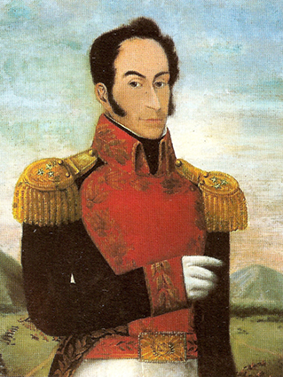

Simón Bolívar, de Arturo Michelena. Óleo sobre tela, 1859. Crédito: REPRODUÇÃO/MUSEU BOLÍVAR, CARACAS, VENEZUELA
Simón Bolívar, primeiro presidente da Bolívia, pintura de José Toro Moreno, 1922. Crédito: REPRODUÇÃO/PALÁCIO DO CONGRESSO NACIONAL, LA PAZ, BOLÍVIA
Simón Bolívar homenageando a bandeira após a Batalha de Carabobo, 24 de junho de 1821, de Arturo Michelena, 1883. Crédito: REPRODUÇÃO/MUSEU BOLÍVAR, CARACAS, VENEZUELA
Monumento a Simón Bolívar, Praça Bolívar, Bogotá, Colômbia. Fotografia de 2017. Crédito: FOTOS 593/SHUTTERSTOCK.COM/PRAÇA BOLÍVAR, BOGOTÁ, COLÔMBIA